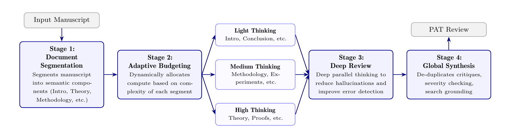

AI now generates science faster than humans can verify it — peer review is the bottleneck. Google's Paper Assistant Tool (PAT) is an agentic reviewer (on Gemini Deep Think) that segments a paper, spends more compute on the hard parts, deep-reviews each segment, and synthesizes with search-grounding. On a math/proof error-detection subset of SPOT it hits 89.7% recall (vs 55.2% zero-shot, 21.1% prior SOTA), and it was piloted as an author pre-submission tool at STOC + ICML across >4,700 submissions. AI가 이제 사람이 검증하는 속도보다 빠르게 과학을 생성한다 — 피어 리뷰가 병목이다. Google의 Paper Assistant Tool(PAT)은 논문을 세그먼트로 나누고, 어려운 부분에 연산을 더 쓰고, 세그먼트마다 심층 리뷰한 뒤 검색 그라운딩으로 종합하는 에이전트 리뷰어(Gemini Deep Think 기반)다. SPOT의 수학/증명 오류 탐지 부분집합에서 89.7% 재현율(제로샷 55.2%, 기존 SOTA 21.1% 대비)을 찍고, STOC+ICML에서 4,700+건 제출에 저자 사전 제출 도구로 파일럿됐다.
AI accelerates generating science (code, proofs) but the Scientific Method requires validating it — and human verification labor can't keep pace. Peer review is the acute pressure point.AI가 과학 생성(코드·증명)을 가속하지만 과학적 방법은 검증을 요구하고, 사람의 검증 노동은 이를 못 따라간다. 피어 리뷰가 첨예한 압박점.
PAT does objective error-finding and improvement suggestions — it does not produce accept/reject scores or subjective assessments.PAT는 객관적 오류 발견과 개선 제안을 한다 — 수락/거절 점수나 주관적 평가는 내지 않는다.
Verifying dense proofs needs many "thinking tokens" that overflow a single context; PAT spends that budget adaptively (Light/Medium/High) across segments.촘촘한 증명 검증엔 단일 컨텍스트를 넘치는 "thinking 토큰"이 많이 필요하다; PAT는 그 예산을 세그먼트별로 적응 배분(Light/Medium/High).
A third-party benchmark of manuscripts with verified mistakes that led to errata/retractions. PAT uses a filtered 26-paper/29-error math+CS "equation/proof" subset.정오표/철회로 이어진 검증된 실수를 담은 서드파티 벤치마크. PAT는 26논문/29오류의 수학+CS "수식/증명" 부분집합을 필터해 씀.
Naive many-independent-calls raises recall but kills precision — 10 passes of 10 issues each forces a human to sift ~100 issues per real critical one. PAT synthesizes + grounds instead.순진한 다수 독립 호출은 재현율을 올리되 정밀도를 죽인다 — 이슈 10개짜리 10회면 진짜 하나당 ~100개를 걸러야. PAT는 대신 종합+그라운딩.
A taxonomy (SAE-autonomy analogy): Role 1 tool-for-authors → Role 2 tool-for-reviewers → Role 3(.5) supporting reviewer → Role 4 total automation ("AIrXiv"). PAT is at Role 1/2 today.분류(SAE 자율주행 비유): Role 1 저자 도구 → Role 2 리뷰어 도구 → Role 3(.5) 보조 리뷰어 → Role 4 완전 자동("AIrXiv"). 현재 PAT는 Role 1/2.
AI now accelerates the generation of science — code, pattern-mining, theorem-proving — but the Scientific Method demands rigorous validation of those outputs, and human verification labor won't scale to match. The bottleneck is most acute in peer review, which is "entirely unequipped to handle the influx of new papers." In math/TCS, reviewing means line-by-line proof verification that "can take a human reviewer days," and submission volume to flagship venues has exploded (combined ICLR+ICML+NeurIPS ~17k in 2020 → ~74k estimated in 2026).
AI는 이제 과학 생성 — 코드·패턴 마이닝·정리 증명 — 을 가속하지만, 과학적 방법은 그 산출을 엄밀히 검증할 것을 요구하고, 사람의 검증 노동은 이를 못 따라간다. 병목은 피어 리뷰에서 가장 첨예하다 — "쏟아지는 새 논문을 감당할 준비가 전혀 안 됐다." 수학/TCS에서 리뷰는 "사람 리뷰어가 며칠 걸릴" 라인 단위 증명 검증을 뜻하고, 대표 학회 제출량은 폭발했다(ICLR+ICML+NeurIPS 합계 2020년 ~1.7만 → 2026년 추정 ~7.4만).
"While human verification remains the ideal, the cognitive labor required will not scale to keep pace with automated generation."
— §1 · 원문 보기 (§1)
Prior automated-review work characterizes the problem (SPOT compiles retraction-causing mistakes; its original SOTA scored only 21.1% on the math/proof subset) but "comparatively less work has been done to optimize systems for error detection." PAT specializes in math/CS error detection, not subjective ranking.
기존 자동 리뷰 연구는 문제를 특징짓지만(SPOT은 철회를 부른 실수를 모으고, 원래 SOTA는 수학/증명 부분집합에서 21.1%에 그침) "오류 탐지에 시스템을 최적화한 연구는 상대적으로 적다." PAT는 주관적 순위가 아니라 수학/CS 오류 탐지에 특화한다.
PAT rejects two obvious baselines: a single call (dense math verification needs more thinking tokens than fit one context) and Pass@k (many independent calls raise recall but wreck precision — 10 passes × 10 issues forces a human to sift ~100 proposals per real critical error, and uncoordinated calls redundantly re-check the same sections). Instead it orchestrates four stages, shown in the paper's own Figure 1:
PAT는 두 명백한 베이스라인을 기각한다: 단일 호출(촘촘한 수학 검증은 한 컨텍스트에 안 들어가는 thinking 토큰을 요구)과 Pass@k(다수 독립 호출은 재현율을 올리되 정밀도를 파괴 — 이슈 10개짜리 10회면 진짜 치명 오류 하나당 ~100개를 걸러야 하고, 비조율 호출은 같은 절을 중복 재검사). 대신 네 단계를 오케스트레이션한다 — 논문의 Figure 1 원본:

PAT's four-stage pipeline: segment → adaptively budget compute (Light/Medium/High Thinking by segment complexity) → deep-review each segment with the full paper as context → global synthesis (de-dup, severity checking, Google-Search grounding).PAT의 4단계 파이프라인: 분할 → 세그먼트 복잡도별 컴퓨트 배분(Light/Medium/High Thinking) → 세그먼트별 심층 검토(전체 논문을 컨텍스트로) → 전역 종합(중복 제거·심각도 판정·구글 검색 그라운딩). · Figure 1, arXiv:2606.28277
"PAT employs a 'segmenter' agent to break each paper into segments, each of which is a set of pages which share a logical theme (e.g., experiments, theory, methodology, etc.). The segments can be overlapping and non-contiguous."
— §2 · 원문 보기 (§2)
"The synthesis agent utilizes Google search as an extra check for hallucinations (e.g. non-existent papers or theorems), before assembling the final review."
— §2 · 원문 보기 (§2)
Models: the framework runs on Gemini Deep Think. The SPOT benchmark used Gemini 3.1 Pro (zero-shot baseline and PAT); the STOC + ICML pilots were powered by an advanced Gemini 2.5 Deep Think. Benchmark: the SPOT dataset filtered to Math/CS "equation/proof" errors → 26 papers, 29 errors. Crucially, PAT uses a logic-aware grader (reasons about whether a raised issue is logically equivalent to the ground-truth error) instead of SPOT's strict exact-keyword grader — so its numbers "are not directly comparable to those reported in the SPOT paper," and a human author audited every autograder grade. Pilots: deployed as a Role-1 author tool (run once, given only to authors weeks before the deadline) at STOC 2026 (math-heavy) and ICML 2026 (generalized), over >4,700 submissions (survey cohorts: STOC n=124, ICML n=733). It is a Google-internal, closed tool — no public code, weights, prompts, or API.
모델: 프레임워크는 Gemini Deep Think에서 돈다. SPOT 벤치마크는 Gemini 3.1 Pro(제로샷 베이스라인과 PAT)를, STOC+ICML 파일럿은 고도화된 Gemini 2.5 Deep Think를 썼다. 벤치마크: SPOT 데이터셋을 수학/CS "수식/증명" 오류로 필터 → 26논문, 29오류. 결정적으로 PAT는 SPOT의 엄격한 정확 키워드 grader 대신 논리 인지 grader(제기된 이슈가 ground-truth 오류와 논리적으로 동치인지 추론)를 써서, 그 수치는 "SPOT 논문 보고치와 직접 비교되지 않고" 저자가 모든 autograder 채점을 감사했다. 파일럿: Role-1 저자 도구로 배포(한 번 실행, 마감 몇 주 전 저자에게만 제공), STOC 2026(수학 중심)·ICML 2026(일반화), 4,700+ 제출(설문 코호트: STOC n=124, ICML n=733). Google 내부 비공개 도구 — 공개 코드·가중치·프롬프트·API 없음.
Table 2 — verification accuracy (recall) on the SPOT math/CS equation-and-proof subset:
| Verification method검증 방법 | Detection accuracy탐지 정확도 |
|---|---|
| Original SPOT SOTA (2025)원래 SPOT SOTA(2025) | 21.1% |
| Gemini 3.1 Pro (zero-shot)Gemini 3.1 Pro(제로샷) | 55.2% |
| PAT (Gemini 3.1 Pro) | 89.7% |
PAT gains +34 points over single-generation (the abstract's "34% improvement over zero-shot recall"), i.e. it surfaces ~26 of the 29 known errors. Zero-shot already clears 50% — attributed to a newer model generation and the logic-aware grader. On one dual-Banach-spaces paper, the zero-shot baseline accepted a false claim; PAT refused it and constructed a concrete counterexample exposing a fatal gap.
PAT는 단일 생성 대비 +34점(초록의 "제로샷 재현율 대비 34% 향상"), 즉 알려진 29개 오류 중 ~26개를 드러낸다. 제로샷도 이미 50%를 넘는데 — 더 새로운 모델 세대 와 논리 인지 grader 덕분. 어떤 이중 바나흐 공간 논문에서 제로샷 베이스라인은 거짓 주장을 수락했지만, PAT는 거부하고 치명적 결함을 드러내는 구체적 반례를 구성했다.
"PAT, however, refused to accept this claim at face value; instead, it constructed a concrete counterexample, exposing a fatal gap that invalidates the main theorem."
— §2.1 · 원문 보기 (§2.1)
Table 3 — author survey (STOC n=124 vs ICML n=733):
| Survey question설문 항목 | STOC | ICML |
|---|---|---|
| Would use PAT again다시 사용하겠다 | 97% | 92.1% |
| Very / mostly helpful매우/대체로 유용 | 92.7% | 90.7% |
| Feedback mostly / all grounded피드백 대부분/전부 근거 있음 | 55.8% | 64.8% |
| Identified substantive theory gaps실질적 이론 결함 발견 | 11.6% | 35.4% |
| Ran new experiments because of PATPAT 때문에 새 실험 수행 | — | 31% |
"Substantive theory gaps" = errors needing >1 hour to fix: ~1-in-10 (STOC) to >1-in-3 (ICML). STOC's 11.6% is called high because those proofs "are rarely checked in their entirety," so such errors would usually go unnoticed. The paper also uses NeurIPS consistency data to argue humans are themselves noisy: a 23% accept/reject inconsistency vs a 35% random baseline (16% excluding borderline cases).
"실질적 이론 결함" = 고치는 데 1시간 넘게 걸리는 오류: STOC ~10에 1 ~ ICML 3에 1 이상. STOC의 11.6%가 높다고 보는 건 그 증명들이 "전부 검토되는 일이 드물어" 그런 오류가 보통 눈에 안 띄기 때문. 논문은 또 NeurIPS 일관성 데이터로 사람도 시끄럽다고 논한다: 수락/거절 불일치 23% vs 무작위 기준 35%(경계 사례 제외 시 16%).
"Surprisingly, PAT found significant theory errors in more than one in three ICML respondents' papers."
— §3.1 · 원문 보기 (§3.1)
The paper offers a 4-role taxonomy for AI in peer review (analogous to SAE autonomy levels): Role 1 tool for authors (PAT's pilots today); Role 2 tool for reviewers (human still owns the review); Role 3 supporting reviewer that writes a full independent review (3.5 adds subjective ratings, shifting humans toward Area-Chair decision-makers); Role 4 total automation — envisioning an "AIrXiv" repository of AI-vetted papers. PAT operates at Role 1/2 today; automating logical validation frees humans for "deep conceptual novelty and elegance."
논문은 피어 리뷰 AI의 4-역할 분류(SAE 자율 등급 비유)를 제시한다: Role 1 저자 도구(현재 PAT 파일럿); Role 2 리뷰어 도구(사람이 여전히 리뷰 소유); Role 3 독립적 전체 리뷰를 쓰는 보조 리뷰어(3.5는 주관적 평점 추가, 사람을 Area Chair 의사결정자로 이동); Role 4 완전 자동 — AI 검증 논문의 "AIrXiv" 저장소 구상. 현재 PAT는 Role 1/2; 논리 검증 자동화는 사람을 "깊은 개념적 참신함과 우아함"으로 해방한다.
Risks the paper raises: accountability (where algorithmic assessment ends and human judgment begins), reviewer deskilling/cognitive complacency, equitable access to compute, algorithmic bias, reduced diversity of opinion, and authors adversarially gaming review agents. Even Role-1 polishing may hide weaknesses, making weak papers look superficially stronger.
논문이 제기하는 위험: 책임 소재(알고리즘 평가가 끝나고 사람 판단이 시작되는 지점), 리뷰어 탈숙련/인지적 안일, 연산 접근의 형평성, 알고리즘 편향, 의견 다양성 감소, 그리고 저자의 적대적 게이밍. Role-1 다듬기조차 약점을 숨겨 약한 논문을 겉보기에 강하게 만들 수 있다.
"Furthermore, automation may introduce systemic vulnerabilities, such as algorithmic biases and the risk of authors adversarially gaming review agents."
— §5 · 원문 보기 (§5)